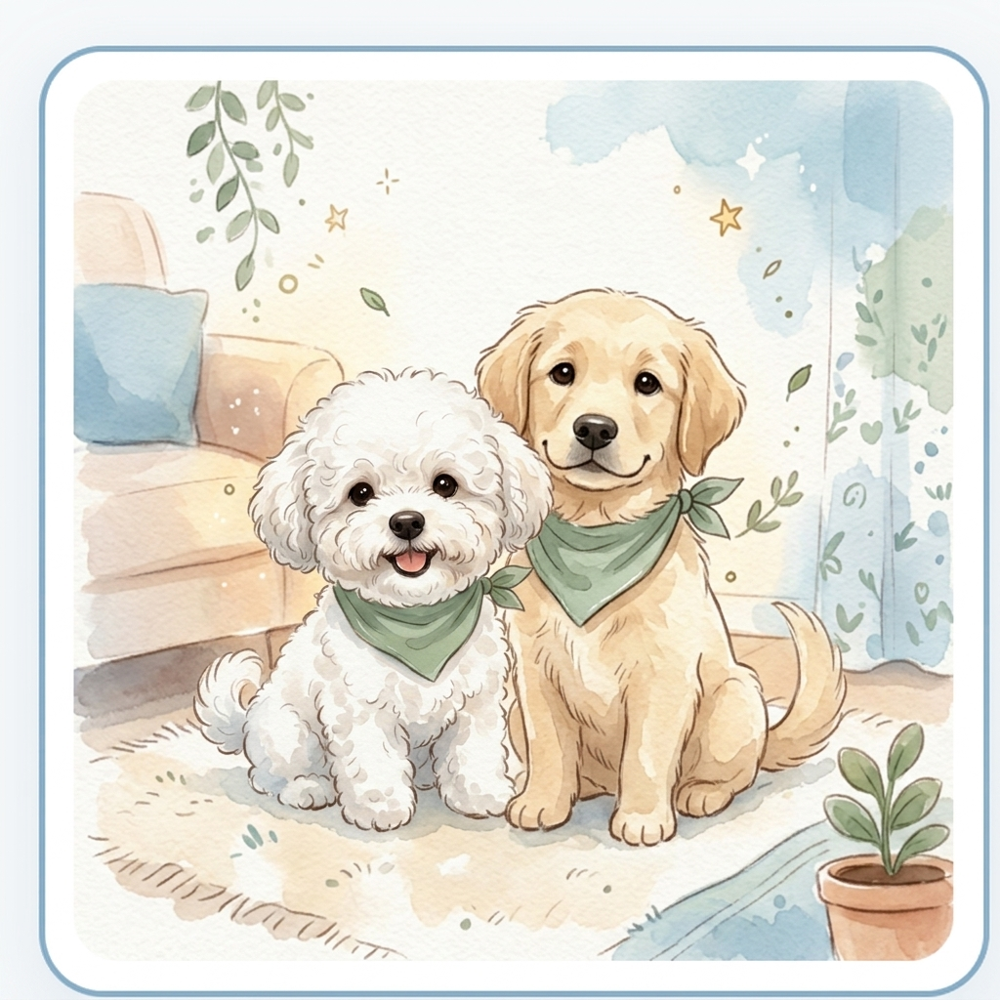

從零認識犬隻體型分類、性格評估到日常照護基本概念，幫你找到最契合生活步調的毛孩夥伴。
資料來源：狗狗介紹.pdf · 使用鍵盤 ← → 方向鍵或下方按鈕翻頁

在挑選狗狗前，首先要了解寵物照護學中如何依「成犬體重」區分體型，因為這直接決定了居住空間、食量與醫療預算：
| 體型分級 | 成犬體重標準 | 代表品種範例 | 居住與生活特性 |
|---|---|---|---|
| 迷你犬 | 4 公斤以下 | 馬爾濟斯、吉娃娃、博美、約克夏 | 適合公寓套房，但骨骼較細小需防摔傷 |
| 小型犬 | 5 – 10 公斤 | 比熊犬、迷你貴賓、西施、迷你雪納瑞 | 都市新手最熱門，運動量適中、抱起容易 |
| 中型犬 | 11 – 25 公斤 | 柯基（11–14 kg） | 體力與牧羊本能較強，需規律運動與脊椎保護 |
| 大型犬 | 超過 25 公斤 | 拉布拉多、黃金獵犬（25–34 kg） | 需要寬敞活動空間、高運動量與關節保養 |
性格：親人、適應力強、不太吠叫。
日常重點：雙層捲毛需每天梳毛防打結，早晚擦拭眼周防淚痕，夏季注意室內散熱。
性格：溫馴乖巧、友善黏人。
日常重點：食量小但易挑食，建議選用小顆粒飼料，並定期保養眼睛與心臟健康。
性格：活潑熱情、智商極高好訓練。
日常重點：情感敏銳需充足互動陪伴，波浪捲毛常梳理，垂耳構造每週清潔防發炎。
| 比較維度 | 幼犬 (Puppy) | 成犬 (Adult Dog) |
|---|---|---|
| 個性與習慣 | 可塑性極高，能從零培養生活默契 | 個性與體型已定型，較容易判斷是否契合 |
| 作息與破壞期 | 精力旺盛、長牙期易啃咬、半夜可能需如廁 | 作息穩定、破壞期已過，居家規矩較成熟 |
| 時間投入要求 | 需要高密度照顧、社會化與定點如廁訓練 | 每日固定散步與餵食即可，照顧門檻較低 |
| 適合族群 | 時間充裕、能全心投入早期訓練的新手 | 白天需上班的雙薪家庭或初次養狗新手 |
比熊、貴賓、馬爾濟斯、黃金獵犬等愛人犬種，長時間獨處容易焦慮吠叫或啃家具：
高能量犬種（哈士奇、柴犬、柯基）若缺乏運動，精力過剩就會變成拆家行為：
本簡報已同步收錄至知識庫 wiki/concepts/beginner-friendly-dogs.md 與各品種專屬頁面。接下來你可以繼續擴充貓咪、鳥類、水族或爬蟲類的教學知識！
檔案位置：slides/新手適合養的狗狗全攻略.html · 封面圖：raw/assets/新手適合養的狗狗全攻略-封面.png